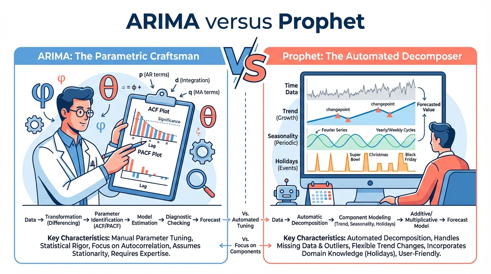
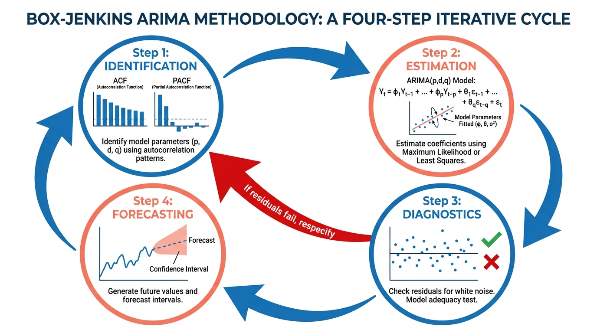
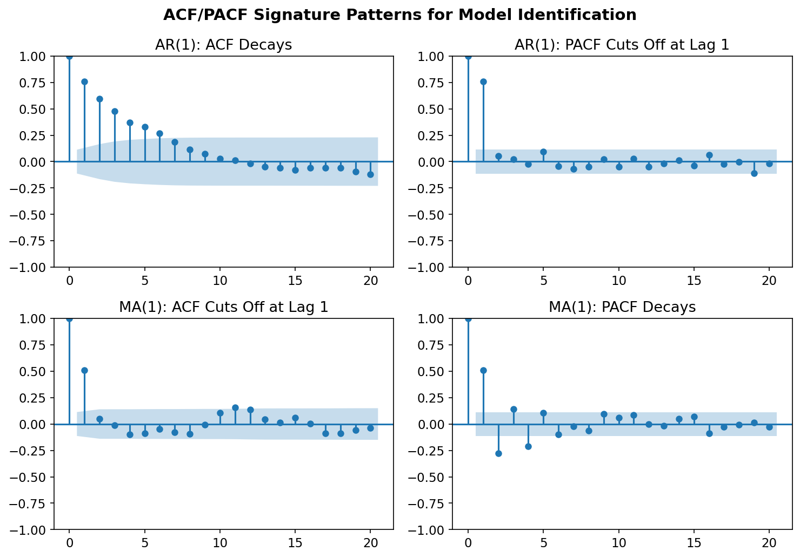
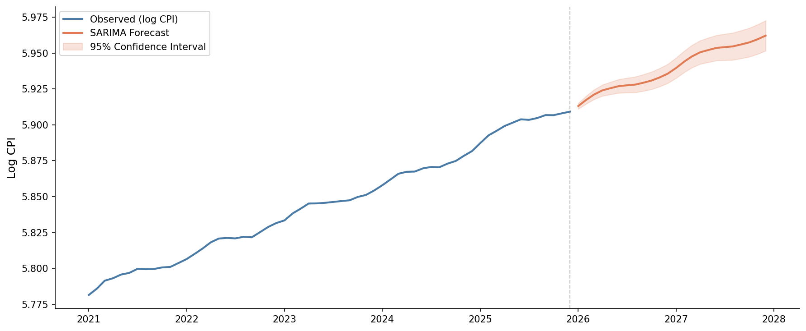
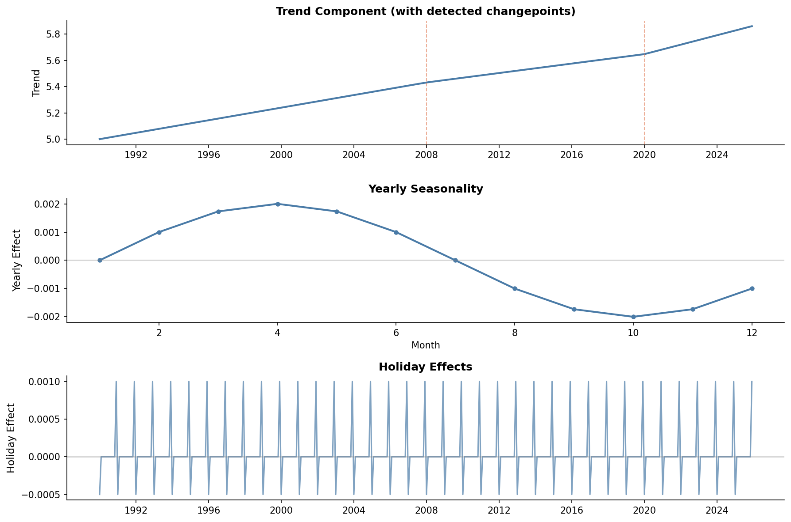
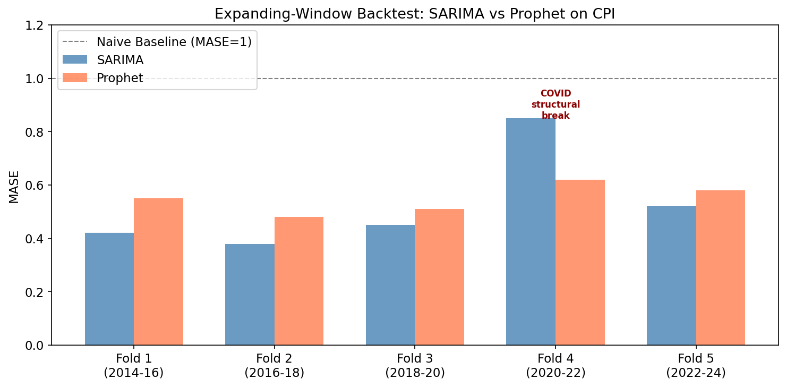
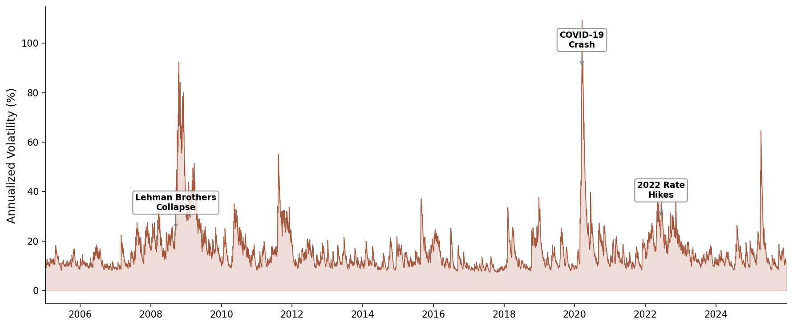

ECON 5200 • Causal ML & Applied Analytics • Chapter 21
Dr. Richeng Piao
Department of Economics
Northeastern University

LO1
Understand the Box-Jenkins ARIMA identification-estimation-diagnostic cycle
LO2
Apply ARIMA, SARIMA, and Prophet models to economic time series in Python
LO3
Analyze forecasting models using MASE and time series backtesting
LO4
Evaluate forecast reliability across structural breaks
What does $L^2 y_t$ return?
$y_{t-2}$ — the value two periods ago
ADF test on CPI: p-value = 0.87. What do you conclude?
Fail to reject → non-stationary. Difference and re-test. That gives you $d$.
Why expanding-window CV instead of random $k$-fold?
Temporal dependence — shuffling leaks future into training
In June 2022, Target reported a quarterly profit collapse of nearly 90%.
Demand forecasting models trained on pandemic-era spending patterns extrapolated the old regime. Consumer spending rotated back to services.
The structural break had already occurred.
$15.1B
Inventory (+43%)
-90%
Quarterly Profit
-57%
Full-Year Operating Income
Autoregressive + Moving Average + Differencing
13 minutes
"Today's value depends on yesterday's value."
Like driving: your current speed continues your recent trajectory.
"Today's value depends on yesterday's surprise."
Like steering: you adjust based on how far off your predicted path you drifted.
Differencing = measuring speed instead of position. Even if position keeps changing, speed might be constant.
$$Y_t = c + \phi_1 Y_{t-1} + \phi_2 Y_{t-2} + \cdots + \phi_p Y_{t-p} + \varepsilon_t$$
$\phi_1, \ldots, \phi_p$ = AR coefficients (persistence)
$p$ = number of lags included
$\varepsilon_t \sim \text{WN}(0, \sigma^2)$ = white noise
$c$ = constant (intercept)
Interpretation: AR(1) with $\phi_1 = 0.95$ means 95% of today's deviation carries to tomorrow. High $\phi$ = sluggish, persistent series (GDP, CPI).
$$Y_t = \mu + \varepsilon_t + \theta_1 \varepsilon_{t-1} + \cdots + \theta_q \varepsilon_{t-q}$$
$\theta_1, \ldots, \theta_q$ = MA coefficients (shock decay)
$\varepsilon_{t-j}$ = past forecast errors (white noise shocks)
Key difference: MA has short memory. MA(1) with $\theta_1 = 0.7$: yesterday's shock echoes at 70%, but by the day after tomorrow, it's gone. AR shocks propagate indefinitely.
$$\phi(B)(1 - B)^d Y_t = \theta(B) \varepsilon_t$$
$B$ = backshift operator ($BY_t = Y_{t-1}$)
Same as lag operator $L$ from Ch 20
$(1-B)^d$ = difference $d$ times
$\phi(B)$ = AR polynomial
$\theta(B)$ = MA polynomial
$d$ = from ADF/KPSS (Ch 20)
Recipe: (1) Difference $d$ times for stationarity. (2) AR captures persistence. (3) MA captures shock decay.

auto_arima)
auto_arima() is Step 2 only. Not a substitute for Steps 1 & 3.

| Pattern | ACF | PACF | Model |
|---|---|---|---|
| AR($p$) | Decays | Cuts off | Read $p$ |
| MA($q$) | Cuts off | Decays | Read $q$ |
| ARMA | Both decay | Both decay | AIC search |
"Cuts off" = drops inside $\pm 1.96/\sqrt{T}$ bands. "Decays" = geometric decline.
ACF decays slowly. PACF shows significant spikes at lags 1 and 2, then drops inside the bands.
What model do you fit?
$$\phi(B)\Phi(B^m)(1-B)^d(1-B^m)^D Y_t = \theta(B)\Theta(B^m)\varepsilon_t$$
Lowercase = non-seasonal • Uppercase = seasonal at lag $m$ • $(1-B^{12})Y_t = Y_t - Y_{t-12}$

You're the data science lead at a retailer with 50,000 SKUs. Each needs a weekly forecast updated every Sunday night.
An analyst advocates fitting individual ARIMA models — manually inspecting ACF/PACF for each SKU.
Would you adopt this approach, or automate?
What are you trading off?
2 min pairs → 3 min share-out
Decomposition-Based Forecasting at Scale
12 minutes
$$y(t) = g(t) + s(t) + h(t) + \varepsilon_t$$
$g(t)$
Trend with auto changepoints
Piecewise linear or logistic
$s(t)$
Fourier seasonality
Sines + cosines
$h(t)$
Holiday effects
User-specified dates
Changepoints use L1 regularization (Laplace prior) — same principle as LASSO (Ch 16). Most potential changes shrink to zero.
| Bai-Perron (Ch 20) | Prophet Changepoints | |
|---|---|---|
| Goal | Diagnose when DGP changed | Incorporate into forecast |
| Method | Sequential F-tests | L1-regularized trend changes |
| Output | Break dates + p-values | Smooth piecewise trend |
| Use case | Explain the past | Predict the future |

Between 2021–2023, Walmart rebuilt demand forecasting for 140M SKU-location combinations.
The solution: a hybrid architecture.
Manual Forecasting Time
-75-90%
Key Insight
No single model wins everywhere
Prophet detects 3 changepoints in CPI (2008, 2020, 2022). Your boss says "just use ARIMA, it's simpler."
Best response?
MASE: The Economist's Scorecard
8 minutes
1. Division by zero — when $y_t = 0$ (intermittent demand), MAPE is undefined
2. Asymmetric penalty — over-forecasts penalized more than under-forecasts
3. Scale dependence — can't compare MAPE across series with different scales
We need something better → MASE
$$\text{MASE} = \frac{\displaystyle\frac{1}{h} \sum_{t=1}^{h} |e_t|}{\displaystyle\frac{1}{T-m} \sum_{t=m+1}^{T} |Y_t - Y_{t-m}|}$$
Numerator: MAE of your forecast
Denominator: MAE of seasonal naive on training data
MASE < 1
Beats naive
MASE = 1
Equals naive
MASE > 1
Worse than naive

SARIMA avg MASE: 0.45
55% better than naive
Prophet avg MASE: 0.52
48% better than naive
SARIMA gets MASE = 0.45 on CPI. Prophet gets 0.52.
A colleague says: "SARIMA wins, case closed. Let's deploy it."
What's missing from this analysis?
3 min discussion → 2 min debrief
When Variance Changes Over Time
5200-DEPTH • 6 minutes

Does this look like constant variance to you?
$$\sigma_t^2 = \omega + \alpha \varepsilon_{t-1}^2 + \beta \sigma_{t-1}^2$$
$\alpha$ = reaction to yesterday's shock squared
$\beta$ = persistence of yesterday's variance
$\omega$ = baseline variance (floor)
$\alpha + \beta < 1$ = stationarity condition
S&P 500 typical: $\alpha \approx 0.09$, $\beta \approx 0.90$. Sum = 0.99 → volatility decays extremely slowly. A March 2020 spike still influenced conditional variance months later.
Ch 5 callback: VaR assuming constant variance underestimates tail risk during crises. GARCH provides the time-varying variance those risk measures need.
GARCH(1,1) on S&P 500: $\alpha = 0.09$, $\beta = 0.90$.
What does $\alpha + \beta = 0.99$ tell you?
1. ARIMA = autoregressive momentum ($\phi$) + moving average correction ($\theta$), after differencing for stationarity
2. Box-Jenkins is a cycle, not a command. auto_arima = Step 2 only.
3. Prophet trades parametric interpretability for automated decomposition at scale (L1 changepoints)
4. MASE benchmarks against seasonal naive. < 1 = adds value. > 1 = worse than doing nothing.
5. No single model wins everywhere. Walmart's hybrid reduced costs by 75–90%.
1. Write the MASE formula from memory.
Label the numerator and denominator.
2. Interpret MASE = 0.7 in one sentence.
"My forecast errors are ____% smaller than ____."
3. When would you choose Prophet over ARIMA?
Name one scenario.